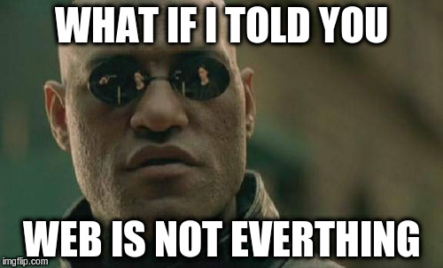
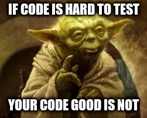

## Software development survival guide 101 Andraz Brodnik @brodul
``` self.about # TODO(brodul): impure property call ``` Note: Over 5 years in python Over 10 years in GNU/linux Worked for robotic industry, networking, compliance startups, stanalone projects, family I like playing blues harp I like drinking beer and dating I hate giving traditional presentations because to be onest you just want to have fun, learn something new, drink beer and eat Kiwi
Learning Python for fun and profit
Fun - Codecademy - Project Euler - ... Note: django
Fun and profit - Django - ? Note: Don't be a programer be yourself be someone that has a back and knows how to program
If you think web is great: - Explore different web frameworks (Pyramid, Flask, Tornado ...) - Explore different languages (Golang, Elm ...) - Go fullstack (learn Javascript)

Pandas
# Hardware - pySerial and Arduino Nano (€3) - MicroPython pyboard (€15 .. €35) - openOPC (€50k)
Learn tools: - Learn git (please do it) - Use linters (flake8) - Get out your confort zone (vim/emacs users) Note: Git commit and git push to github
## Keep sanity ``` ["nom", "love", "covfefe"]["fu" == "bar"] ``` - Meta programming - Write tests
## Testing (bonus slide) - Testing pyramid - Selenium test - the holy grail - pytest

## Keep sanity 2 - Continuous integration - Sentry - Test backups - Ansible
## What about docker !?
by Chris Erwin
## Useful content - Video lectures by "Uncle Bob" Robert Cecil Martin - Read "The War of Art" - Steven Pressfield - Read your frameworks source code - Learn functional programming principles
http://goo.gl/m7Tvyz
@brodul